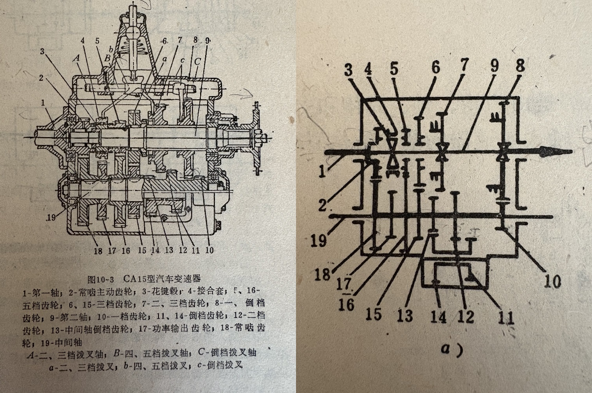

It is the first time I use English to introduce a way to calculate transmission gear ratio in a gear box although I have a little but no more experience to interpret mechanic in English. As a methodology to treat realities into understanding, like the Venn Diagram which is used to understand naive set theory and the Karnaugh Map simplifying up to 4 boolean variable expressions, I called this way Transmission Formula that is used to let us quickly tally gear transmission ratios. You can call it John formula as you wish.
Firstly let us learn how gears work. A gear is typically a round cylindrical plate with teeth circumscribe it's circumference. When a gear turns, it's teeth pass the force to anther gear's teeth to let the other turns. I call the former gear the prime mover, and the second gear the driven gear. If the prime mover has 18 teeth and the driven gear has 6 teeth, when the prime mover turns around for a circle, the driven gear turns exactly 3 times around. I call this two gear system the minimal gear to gear transmission system written as (A,18)(B,6) whereas A is the prime mover and B is the driven gear.
In the circumstance that we add a chain between two gears to let them move, for instance, gear (A) engages gear (B) by a chain. Because a chain will not alter the two gears' linear velocity when they are working together, but it alters the driven gear's angular velocity if the teeth number of (A) is not equal to the teeth number of (B). Thus we write {(A,18)(B,6)} to signify that if (A) turns clockwise, (B) turns clockwise either. This contradicts to a typical gear-gear system.
A planet gear group has the same theory as this gear to gear system. Suppose the sun gear A is the prime mover, the planet gear B is the driven gear. If sun gear has 18 teeth and the planet gear has 6 teeth, gear A turns around 1 time, gear B turns around 3 times.
Second, let us learn a gear-shaft-gear system. Suppose we have a gear A which is connected to a shaft B. On the other side of the shaft B, it connects another gear called C. See Figure 2.1.
|-|
|-| |-|
|-|===============|-|
|-| Shaft B |-|
|-| Gear C
Gear A
Figure 2.1
In this gear-shaft-gear system, gear A turns around 1 time, gear C turns around 1 time too. Because the shaft B will not alter the angular velocity between gear A and C. Moreover, if gear A turns clockwise, gear B will also turn clockwise. I notate this system as (A,18)[B](C,6) where as gear A has 18 teeth and gear C has 6 teeth, and C is connected to A with shaft B.
Third, back to the gear-gear system (A,18)(B,6), moreover, if gear A turns clockwise, gear B turns counter clockwise exactly. Only if gear (A) connects gear (B) concentrically, and gear (B) engages gear (C) by a chain, we write (A)[A]{(B)(C)} where as a shaft [A] rigidly connects (A) to (B). Is an (A){(B)(C)} system possible? Probably yes. We can manufacture such a gear thus (A) turns clockwise to drive (B) to turn counter clockwise. (B) turns counter clockwise engaging with (C) by a chain, so (C)'s direction is as the same as (B) that is counter clockwise. In system (A)[A]{(B)(C)}, (A) turns clockwise making [A] to turn clockwise together with (B). And (C), here, turns clockwise since (B) connects with sheave (C) by a chain or a belt pulley. We explained chaining gear system hereto.
Let us combine these two systems together, one is gear-gear system, the other is gear-shaft-gear system. I will write Transmission Formulae first and then I will explain them one by one.
3.1. (A)(B)
This represents a gear A connects to another gear B. From this formula, we can know force passes through left to right, and if A turns clockwise, then B turns counter clockwise. If A turns counter clockwise, B turns clockwise.
3.2. [A][B]
This formula represents shaft A gives it's momentum to shaft B. Since two shafts named separately, it says that shaft A does not directly connect to shaft B. Therefor shaft A on this occasion cannot deliver momentum to B. Unless we write [A][A] is the way that shaft A passes it's momentum from one side to another side no matter an angular velocity equal universal joint splits A or a flange splits A, A gives a constant angular velocity from the left side of this formula to the right. Let us consider more subtly from a turbo jet engine. In a turbo jet engine, the low pressure compressor connects to the low pressure turbine with shaft [A] giving engine speed N1. And the high pressure compressor connects to the high pressure turbine with shaft [B] giving speed N2. N1 is not equal to N2 because shaft A sockets shaft B in this way. See Figure 3.2 which represents two separate formula (C)[A](D) and (E)[B](F) where as the inner shaft [A] doesn't affect the outer shaft [B] at all. All in all, we might say [A][B] actuates a kinetic power cutoff to set transmission ratio to 0, because it disconnects [B] from [A].
|-|
|-| |-| |-|
|-| |-|---------------|-| |-|
|-|=======================|-| Shaft A
|-| |-|---------------|-| |-|
|-| |-| Shaft B Gear F|-|
|-| Gear E Gear D
Gear C
Figure 3.2
3.3. (A)[B]
This formula represents gear A rigidly connects to shaft B. Gear A can be welded to shaft B. Gear A can either connect to shaft B by a spline. Gear A can also be a part for shaft B, that is (A) and [B] are lathe processed from one material. Therefor (A) and [B] share a same angular velocity when they are working. Furthermore, (A) rotates with [B] together in a same direction.
3.4. [A](B)
This formula represents a same way to formula 3.3 that shaft [A] connects to gear (B) comparatively.
3.5. (A,18)(B,6)(C,12)
Let us consider this 3-gear-combination and I will handout Transmission Formula Type II after explanation. (A,18) says gear A has 18 teeth. (B,6) says gear B has 6 teeth. So gear A rotates for 1 round made (B) rotates 3 rounds. We say A and B has a transmission ratio of 18/6=3.0 We give the number of teeth an integer for each gear, and a decimal number for this ratio usually kept a precision to 0.1 Since gear B has 6 teeth and gear C has 12 teeth, thus gear A rotates 2 rounds made C rotates 1 round. We say gear B and C has a ratio of 6/12=0.5 Here goes Transmission Formula Type II. 3.0*0.5 delineates a 3-gear-combination such that A and B give ratio 3.0 and B, C give 0.5 for (A)(B)(C). Furthermore, (A) and (B) have contradictory rotation direction, (B) and (C) have contradictory rotation direction, while (A) and (C) share a same rotation direction. From left to right of this formula, if we turn (A) 2 rounds, (C) turns 3 rounds, since 2*3.0*0.5=3 We deduct gear B from Transmission Formula Type II 3.0*0.5 to 1.5 and it says a (A,18)(B,6)(C,12) system is equivalent to a (A,3)(B,2) system. An (A,3)(B,2) system has an exact ratio of 1.5 Note that the number of teeth of a gear must be integral, because we don't have a decimal number teeth gear. For example, we don't say this gear has 3.5 teeth.
3.6. (A)(B)(A)
This formula says gear A drives gear B, and gear B gives momentum back to gear A. Formula 3.6 is not possible for most cases but it is rational, since system (A)(B) inverted A's direction and (B)(A) inverted it again and backed to A's direction. Consider we use a soft shaft(steel rope) to connect (A) and (B). This makes formula 3.6 possible.
3.X7. (A)(B)(C)(A)
Formula 3.X7 is absolutely not possible, because if (A) rotates clockwise, (B) rotates counter clockwise, then (C) rotates clockwise. (C)'s direction contradicts (A)'s, a clockwise rotating gear cannot pass it's momentum to another clockwise rotating gear, so we cannot deliver (C)'s momentum directly back to (A). We may assemble this system, however, (A)(B)(C)(A) locks up and will never turn a little bit.
3.8. (A)(B){(C)(A)}
Formula 3.8 is possible, since A turns clockwise, B turns anti-clockwise, C turns clockwise. C reengages A with a chain. That is C must have the same direction to A. Since we said C turns clockwise and A turns clockwise before, this is not a contradiction. Formula 3.8's possibility is proven to be true. Additionally, is {(A)(B)(C)} possible? We give (A) a clockwise spinning, B spins counter clockwise to make (C) to spin clockwise. (C) engages (A) by a chain to share a same direction. So this system is true. Note that {(A)(B)(C)} is not equal to {(A)(B)}(C). In system {(A)(B)(C)}, (B) has no friction to the chain. (B) only connects (A) and (C) by a gear-gear manner. In system {(A)(B)}(C), (A) engages (B) by a chain, (A) and (B) are not gear-gear manner engaged. {{(A)(B)}(C)} gives three gears A, B and C firmly contacted in the circle of a belt. Thus, meanwhile, either (A) (B) and (C) shall never gear-gear contact. That is no (A)(B), no (B)(C), no (A)(C). {(A)(B)(C)(D)} is not possible at all because gear (D) contradicts belt's running direction.
3.9X. (A)(B)(C)(D)(A)
Formula 3.9X is possible, since A turns clockwise, B turns backwards, C turns clockwise, D turns counter clockwise that makes possible to transmit A's momentum back to A. Note that (A,4)(B,3)(C,2)(D,1)(A) is not possible. Because after we write this into Transmission Formula Type II, we got 4/3*1.5*1.0. After deduction we got 4/3*1.5*1.0=2.0 In order to connect (A)'s momentum back to (A). We must keep this ratio into exact 1.0, because (A) turns 1 round must make (D) to turn 1 round so that we can connect (D) back to (A)
3.10. (A)[B](C)
Formula 3.10 says gear (A) and gear (C) are connected together by a shaft [B]. So (A) rotates with (C) together with a same direction and a same angular velocity.
3.11. [A](B)[C]
Formula 3.11 says shaft [A] connects to gear (B) and then connects to shaft [C]. Shaft [A] and [C] share a same rotation direction when this system works. Gear (B) is not effective at all in this system. We can deduct [A](B)[C] to [A] or [C].
3.12. (A,18)(B,6)[C]{(D,3)(E,9)}[F](G,12)(H,4)[I](J,24)[K]
Let us solve this comprehensive calculation.
Question 1. If we rotate gear (A) counter clockwise, what is the exact rotational direction of which shaft [K] outputted?
Solution:
Scan formula 3.12 from left to right, (A)(B) inverts the input direction. [C] keeps (B)'s direction to (D). {(D)(E)} synchronizes a same direction. (E)[F] shares a same rotational direction with (G). (G)(H) inverts this direction then. [I] follows (H)'s direction and passes this direction to (J) and [K].
We notate clockwise direction with + and counter clockwise with - then we have:
(A)(B)[C]{(D)(E)}[F](G)(H)[I](J)[K]
+ - - - - - - + + + +
Since (A) keeps the same sign as [K], we say, if (A) turns counter clockwise, [K] turns counter clockwise either.
Question 2. Tally the ratio of this system. If A turns 2.5 rounds, how many rounds will gear (J) turn?
Solution 1:
(A,18)(B,6) gives 18/6=3.0
[C] keeps 3.0
{(D,3)(E,9)} gives 3/9. We keep using fraction 3/9 because 3/9=0.333...
[F] keeps 3/9
(G,12)(H,4) emanates a ratio of 12/4=3.0
[I] keeps 3.0 until [K] outputs. Because the entire [I](J,24)[K] system can be deducted to [K].
Here goes Transmission Formula Type II from above:
3.0*(3/9)*3.0=3.0
We apply the initial ration 2.5 on the head of this Transmission Formula Type II and then make deduction.
2.5*3.0*(3/9)*3.0=2.5*3.0=7.5
Therefor, A turns 2.5 rounds, J turns 7.5 rounds.
Solution 2:
Consider formula 3.12, we have:
A turns 1 round, B turns 3 rounds.
B turns 3 rounds, D turns 3 rounds.
D turns 3 rounds, E turns 1 round.
E turns 1 round, F turns 1 round.
F turns 1 round, G turns 1 round.
G turns 1 round, H turns 3 rounds.
H turns 3 rounds, I turns 3 rounds.
I turns 3 rounds, J turns 3 rounds.
Then we apply the initial value 2.5 round to this 3.0 multiple ratio, 2.5*3.0=7.5
Therefor, A turns 2.5 rounds, J turns 7.5 rounds as the same direction to A.
Suppose we have a system like this: [A](B,18)(C,6)[D](E,5)(F,10)[A]. Is this a possible device? The answer is no. Let us solve its comparative Transmission Formula Type II and see if it is reasonable. (18/6)*(5/10)=3*0.5=1.5 It says if we turn shaft [A] around 1 time, gear (F) will input a 1.5 times torque back to shaft [A]. If shaft [A] is rigid, this 1:1.5 ratio will eventually twist shaft [A] or lock the device up to let gears not move anymore. When you are using Transmission Formula, it is hard to say a formula is absolute right or not. Realities must be put in consideration. Materials also play an important role to determine the functionality for a device. As shown in formula 3.6, formula 3.6 could be possible if we bore a soft shaft or something to transit forces backwardly from A to A. In a word, during practicing, without analyze the structure and tally the total ratio, we cannot proof a formula's possibility to work in real.
Transmission Formula is a way to display the transmission relation of a mechanic structure for gears and shafts in a gear box. It can also describe the total transmission ratio from an input shaft to an output one. Machinist read a transmission formula from left to right to understand the mechanic structure and tally the final transmission ratio during designing a gear box or clarifying the intricacy for gears and shafts. In a transmission formula, (G, 20) represents a gear named G and it has 20 teeth. [S] represents a shaft named S. A combination of gears like (A)(B) means gear A and B mesh to deliver momentum from A to B. And a combination of gears like {(A)(B)} means gear A and B engaged by a chain. A combination of gears and shafts reflects how a group of gear works. A gear box usually contains one or more transmission formulae for different shift states.
Transmission Formula Type II is another form of formula which is calculated from the corresponding above-mentioned Transmission Formula Type I. It is used to directly tally the transmission ratio of a set of gears of a device.
A further dual problem for Transmission Formula Type I arouses that suppose we have an arbitrary transmission formula for a deducted specific ratio of x. If we invert input with output for this device, that is we input torque from the original output shaft, we will receive a 1/x ratio from the original input shaft, where x is not 0. This is called gear box inverse configuration.
In reality, for automobiles, an engine gives torque out. If a car has an automatic transmission, engine outputted torque directly injects to a hydraulic torque converter and gives the torque in to a planet gear box. If a car has a manual transmission, engine outputted torque firstly injects to a clutch and then to a gear box. For helicopters, engines give power to a main retarder which usually contains a series of planet gears. Transmission Formula can be used to calculate the gear box input-output ratio for these devices.

The above diagram shows the gear box of CA15 type vehicle. The left diagram shows its structure, the right one is its scheme.
1. Try to explain how reverse gear works.
Solution:
Draw the transmission formula of the left diagram of reverse gear:
[1](2)(18)[19](13)(14)[14](11)(8)[9]
Notate each direction of each gear and shaft in the above transmission formula:
[1](2)(18)[19](13)(14)[14](11)(8)[9]
+ + - - - + + + - -
We can see a positive rotation goes into shaft [1], a negative rotation goes out of shaft [9].
2. Answer whether the right scheme shows the exact principle of the left diagram.
Draw the transmission formula of the right scheme of reverse gear:
[1](2)(18)[19](13)(14)[14](11)(12)[19](10)(8)[9]
Notate each direction of each gear and shaft in the above transmission formula:
[1](2)(18)[19](13)(14)[14](11)(12)[19](10)(8)[9]
+ + - - - + + + - - - + +
We can see a positive rotation goes into shaft [1], a positive rotation goes out of shaft [9].
Therefor, the right scheme cannot show the equivalent reverse gear of the left diagram.
Oct 22 2026 8:17 AM John Cage.